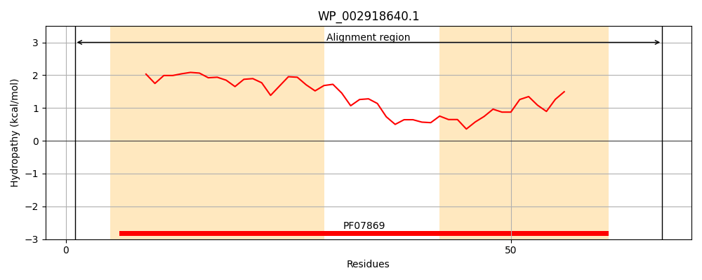
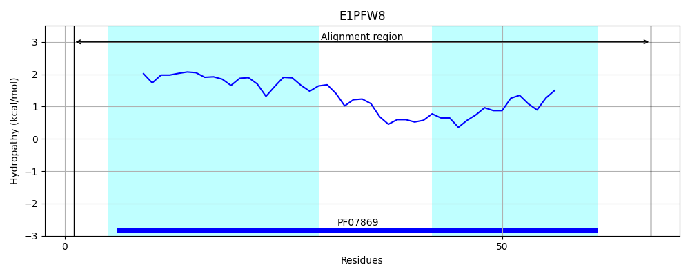
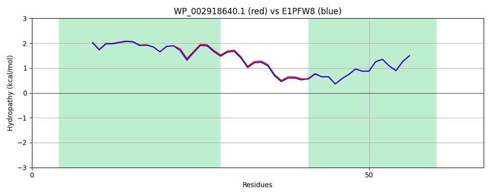

Hit Accession: E1PFW8
Hit TCID: 8.A.48.1.3
Hit Description: gnl|BL_ORD_ID|3593 gnl|TC-DB|E1PFW8|8.A.48.1.3 Protein AaeX OS=Escherichia coli OR:K5:H- (strain ABU 83972) GN=aaeX PE=2 SV=1
Mach Len: 67
e:0.000000
Query TMS Count : 2
Hit TMS Count: 2
TMS-Overlap Score: 2.250000
Predicted Substrates:None
BLAST Alignment:
| Protein Hydropathy Plots: | |
|---|---|
|  |  |
Pairwise Alignment-Hydropathy Plot: | |
|  | |